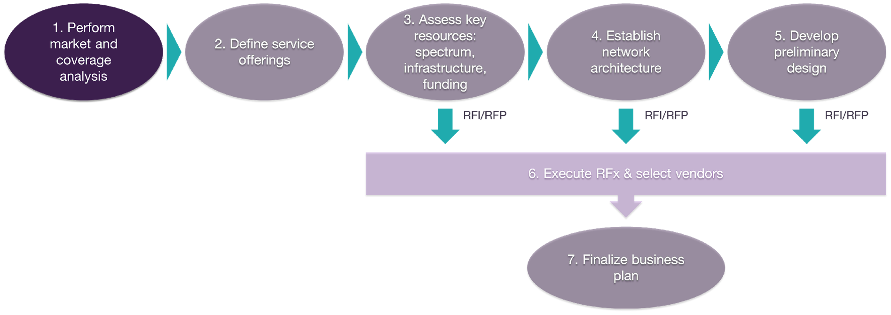
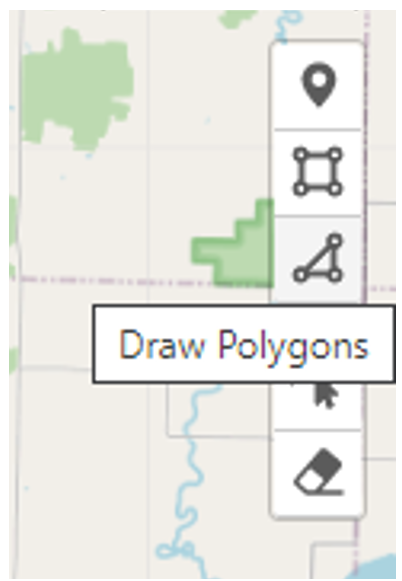
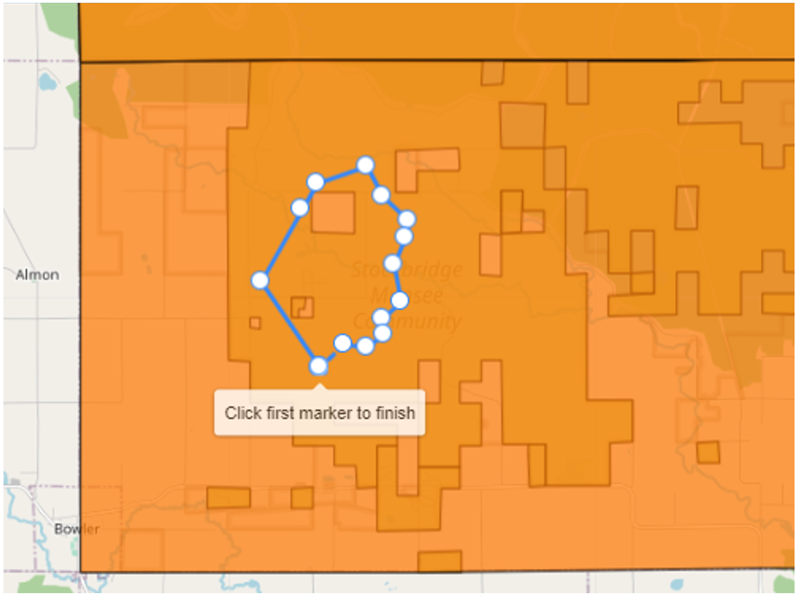
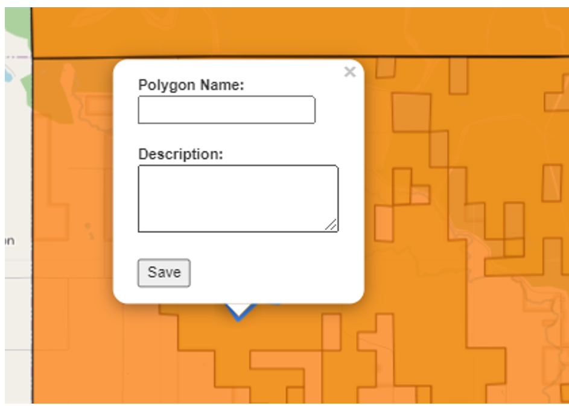

Step 1. Perform market and coverage analysis

The objective of this step is to identify the connectivity needs of your Tribal Land residents, businesses, and institutions, and how these needs are currently being addressed by big carriers and local service providers, if any.
Armed with this data, you will be able to define the target areas and sites to be covered by your Network. This is a fundamental definition that will be the base for several steps further down in the planning journey.
1.1 Engage with stakeholders
To identify the connectivity needs of your Tribal Land and understand the opportunity for the fixed broadband service, you will need to engage with leaders and members of your community, as well as business owners and institution representatives. Engagement can take many forms, such as surveys, questionnaires, and in-depth interviews. A survey is the recommended option since it'll allow you to take a representative sample of your potential customers.
In any case, it's important to know what questions to ask. Frame the necessary questions that enable you to establish the following:
● What are the connectivity needs of your community? How they access the internet? What are the applications or internet services that they use/would like to use?
● How many people would be interested in broadband internet access?
● How much are they willing to pay for a broadband service? Would they pay more for a premium service?
● Where is the highest demand for broadband service?
● Are there any competitors? What speeds are offered by competitors? Are customers from competitors happy with their service? How much they pay?
In addition to residents and business owners, you should engage with institutions representatives to understand their needs and collaborate with them. Some grants will give you money to provide service to schools, libraries, or healthcare facilities. The grant may also help to get a fiber connection to one of these institutions and share that with the Network to provide broadband services. For more on grants, go to section 3.3.
Collect and organize all the information obtained during this task, since it�ll be required for later steps and for integration into the business plan.
1.2 Analyze competition
The previous section's survey will provide you some information regarding competitors and current subscriptions to the existing market offering. To complement this data, you can scout ISP service offerings on their web pages and make use of the FCC Fixed Broadband Deployment tool, where you can find the service providers and speeds for residential and business customers within the area of interest. This may also serve to find a high-speed internet connection provider, which is addressed in step 3.
Knowing the competition will enable you to identify the most underserved areas and pricing points that can be part of your service offering in step 2.
1.3 Define coverage targets
Once you are aware of the areas that represent the highest opportunity, it is time to accurately define your target areas and obtain demographic � and spectrum � data over these areas. Delimiting the target areas and getting population and housing data is a critical input into the network design.
All of this can be done through the Tribal Mapping tool. The following paragraphs provide the necessary guidance to interact with this tool and obtain a map file and a table with the required data to continue planning.
1) To access this tool, go to this link. The user interface is shown in Figure 1.1.

Figure 1.1 � Tribal Mapping Tool.
2) The tool has various layers of information to help you define your target areas. To display or hide the list of layers, click on the "Layer Bar" button as shown in Figure 1.2.
Figure 1.2 � Tribal Mapping Tool Layers.
3) Select under the OpenStreetMap Layers group the type of map that you want to have as a base, available options include various street maps and a satellite view
4) Then, you may activate the Tribal Lands layer to locate and visualize the boundary of your Tribal Land. Wait until the shapes of the Tribal Lands are displayed as shown in Figure 1.3. Zoom in the map to have a better view of your Tribal Land. If you didn't apply for an EBS license or your license has been denied, continue to #8.
Figure 1.3 � Tribal Land Boundaries
5) If you applied for an educational broadband service (EBS) spectrum license and it's pending or has been granted, activate the Tribal Land Applications layer. If you don't know your application's status, you can verify it here or directly in the FCC Application Search portal. When loaded, you can click on the shape to see application information, as shown in Figure 1.4. The description of the fields shown is provided in Table 1.1.

Figure 1.4� EBS Applications
|
Field |
Description |
|
system_id |
Unique system identifier |
|
file_num |
Application File Number |
|
applied_ch |
Shows the new EBS channels that you applied for |
|
channel_1 |
Indicates availability of the spectrum in channel 1. It can take the values below: ● Full: All the channels that conform new channel 1 are available throughout all the area of the application ● Partial: There is at least one channel from new channel 1 that is not available in all the application area ● None: All the channels that conform new channel 1 are licensed throughout all the application area |
|
channel_2 |
Indicates availability of the spectrum in channel 2. It can take the same values as channel 1. |
|
channel_3 |
Indicates availability of the spectrum in channel 3. It can take the same values as channel 1. |
|
Note: For additional information regarding the EBS spectrum, go here. |
|
Table 1.1 � Tribal Land Applications fields.
Look at the data to recall the channels in your application so you can use it later for planning.
6) Keep in mind that the Federal Communications Commission (FCC) requires you to cover 50% of the population in the license area two years after granting your license and 80% after five years. The tool provides an example boundary that complies with this requirement with the smallest area possible, based on 5-year American Community Survey (ACS-5) 2017 data. To review this area, activate the 80% Population layer. You can keep this layer active to guide you when defining your target polygons in #8.
7) If all the EBS channels indicate partial or none availability (#5), it's important to review where and how much spectrum is available to define your strategy. The first option is to limit target polygons to areas where enough EBS spectrum is available. The second alternative is to let target polygons cover area where EBS spectrum is not available and identify these areas to consider another spectrum option for them.
The minimum EBS spectrum required to operate a fixed wireless network efficiently is a single channel of 10 MHz or 15 MHz. An ideal spectrum position is a single channel of 20 MHz, which is enough capacity to provide robust services cost-effectively. On rare occasions, more than 20 MHz of spectrum will be required and can be deployed for additional capacity without increasing the number of sites.
To display the area where spectrum is available, go to the Layer Bar, and under the channel that you want to analyze, select the bandwidth; 5, 10, 15, and 20 MHz are available. Then, activate the layer and you'll see the largest area where at least that block of contiguous spectrum is available as shown in Figure 1.5. The suggestion is to start with 20 MHz and then reduce it until the area shown covers most of your target areas. You can activate another layer to make sure there is enough spectrum in the area you want to provide coverage.

Figure 1.5 � Spectrum availability based on selected bandwidth
These views and the tool itself will also be useful for any consultants or vendors that may help you out during the design process.
8) Now, it's time to draw in the map the areas that your Network will cover, these areas are called target polygons throughout the rest of the playbook. To draw target polygons, select the "Draw Polygons" tool in the toolbar on the map's upper right corner, as shown in Figure 1.6.

Figure 1.6 � Polygon drawing tool.
Click on the screen to define vertices of your polygon following the shape of the target area. To complete the polygon, click on the first vertex, as shown in Figure 1.7.

Figure 1.7 � Creation of a polygon.
After the polygon is finished, it will prompt a text box asking for the polygon's name and description as illustrated in Figure 1.8.

Figure 1.8 � Text box shown after creation of a polygon.
You can add more polygons or edit the existing polygons using the edit tool, highlighted in Figure 1.9.

Figure 1.9 � Polygon editing tool.
Finally, a polygon can be deleted using the delete tool highlighted in Figure 1.10.

Figure 1.10 � Polygon deleting tool.
When defining your polygons, consider the following guidelines:
● Prioritize underserved areas with a high demand or based on tribal policies and targets.
● Identify clusters of homes and businesses in these areas and draw the border enclosing them. If the distance from cluster to cluster is higher than 3 km, consider drawing separate polygons for each cluster. This will allow for a more efficient design.
Keep in mind that the Network will be designed to cover ALL the area in your target polygons. Thus, it's important to avoid covering areas with no households or businesses.
● You can keep target polygons within areas with available EBS spectrum. However, if there is no spectrum or you didn't apply for an EBS license, you can still cover the area, but you'll need to use citizens broadband radio service (CBRS) or unlicensed spectrum � see section 3.1.
9) When all the target polygons have been defined, click on the "Calculate" button shown in Figure 1.11 to obtain population, housing and spectrum data estimated based on ACS-5 census data and FCC EBS licensing data.
Figure 1.11 � Data table for target polygons.
The calculated table will show the following attributes:
● Polygon ID � Name assigned after the polygon is created
● Area � Area of the polygon in square km
● Population � Population within the polygon
● Housing Units � Number of housing units within the polygon
● EBS BW � EBS bandwidth used to calculate the availability attributes
● EBS CH 1 Availability � Indicates the spectrum availability within the polygon based on the bandwidth selected for new channel 1.
● EBS CH 2 Availability � Indicates the spectrum availability within the polygon based on the bandwidth selected for new channel 2.
● EBS CH 3 Availability � Indicates the spectrum availability within the polygon based on the bandwidth selected for new channel 3.
● EBS Detail � Shows the availability for each of the old channels based on the bandwidth selected.
After calculating the data, you may want to edit, add or delete polygons. You can do it and re-generate the table.
10) Add any anchor institutions or buildings that require coverage and will be treated as a priority. Use the marker tool shown in Figure 1.12.

Figure 1.12 � Marker tool
11) The final step is to download the map file (KML) and the table (CSV) so they can be saved on your local PC and shared with your team, consultants, and contractors at a later step. To do this, click on "Export Table", assign a name to the CSV file and select the download folder on your PC.
Then, click on "Export Map", select the preferred format � geojson or KML �, assign a name to the file, and select the download folder in your PC. KML format is recommended for compatibility with Google Earth and other mapping tools.
The generated files for your coverage targets will be used along other steps in the Journey, including the final business plan in step 7.